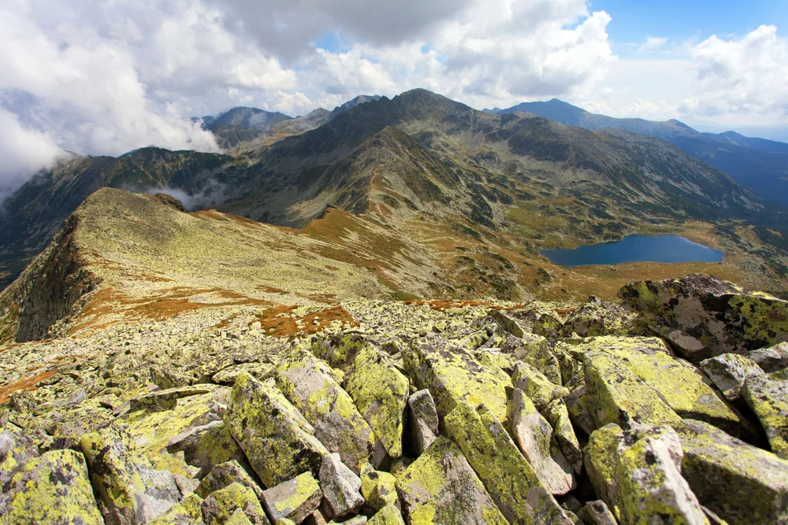

- Râșnov, Bușteni, Azuga – destinații pentru drumeții, sporturi de iarnă, peșteri, castele.
- Trasee montane spectaculoase precum Transfăgărășan (Considerat unul dintre cele mai spectaculoase drumuri montane din lume, leagă Muntenia de Transilvania, traversând Munții Făgăraș. Construit în anii '70, drumul urcă până la peste 2.000 de metri altitudine și oferă peisaje alpine impresionante, tuneluri, viaducte și acces către obiective emblematice precum Lacul Bâlea, Cetatea Poenari sau Barajul Vidraru.) și Transalpina (Cunoscută și ca „Drumul Regelui", este cea mai înaltă șosea din România, atingând altitudinea maximă de 2.145 metri în Pasul Urdele.).
